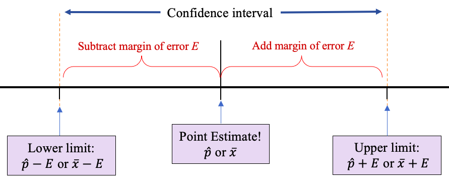
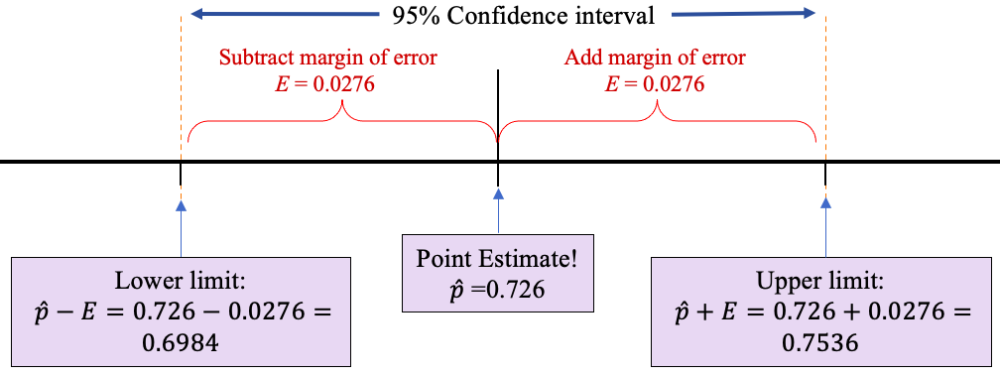
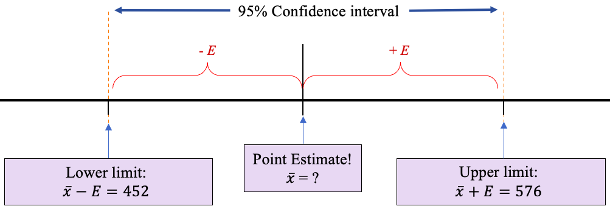
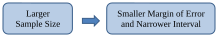
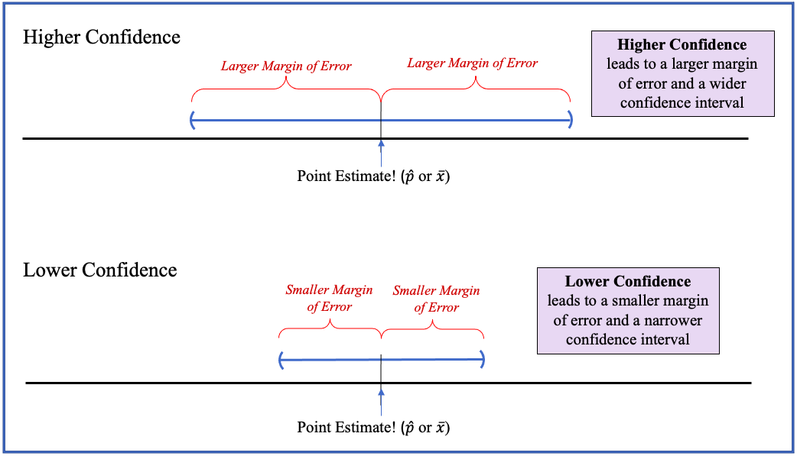
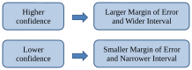
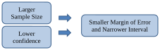

Section 9.1: Basics of Confidence Intervals
Learning Objectives
1.Describe and interpret point estimates.
2.Interpret a confidence interval if given a point estimate and margin of error.
3.Understand and describe how the margin of error is affected by confidence level and sample size.
Point Estimates and Interval Estimates
In chapter 8 we conducted hypothesis tests for population proportions and population means. In that chapter, we assumed that we knew the true value of the parameter, and then used sample data to see if it was consistent with the assumed value. In this chapter we use sample data to make estimates for unknown population parameters, proportions p and means .
The background is that in most applications, we don’t know the true value of population parameters. To find them, we can either (1) use a census and measure the entire population or (2) use sample data to make an estimate. When obtaining a census is impractical or impossible, the only choice is to use sample data. If we can obtain large amounts of unbiased data, we can be very confident in the estimates we make. As an example, when we see reports on the average amount of time adults sleep per night, it is an estimate based on, presumably, a large amount of sample data. There is no way to get that information from every living adult!
There are two types of estimates that we use. A point estimate is a single numerical value that approximates a parameter. For example, based on a Gallup News poll, adult Americans get an average of 6.8 hours of sleep per night. That is a sample mean that is a point estimate for the true value of the population mean amount of sleep.
Definition 1
A Point Estimate is a single numerical value obtained from sample data that is used to estimate a population parameter.
•We use the sample proportion as a point estimate for the population proportion p.
•We use the sample mean to approximate the population mean .
These are called unbiased estimators because the means of their sampling distributions are equal to the parameter they are estimating. That is a consequence of the central limit theorem, covered in sections 7.3 and 7.4. (By the way, it turns out that s is a biased estimator for .) See Table 1.
Table 1: Point Estimates and the Unknown Parameters they Estimate | ||
|---|---|---|
Measurement | Point Estimate (from sample data) | Unknown Parameter (from the population) |
Mean | (x-bar) | (mu) |
Standard Deviation | s | (sigma) |
Proportion of successes in n trials of a binomial experiment. | (p-hat) | p |
Remember that samples vary, so the results we obtain for sample means and sample proportions are likely not exactly equal to the population means and population proportions that they attempt to estimate. For that reason, we will use a second type of estimate, called an interval estimate. The interval estimates for proportions and means use a margin of error along with the point estimate to create a range of values that estimates the parameter. These type of estimates includes a sense of center (the point estimate) along with a sense of variability (how much higher or lower than the point estimate is typical).
For example, sample data for the sleep statistic has a margin of error of E = 0.5 hours. So, we can say the average American sleeps an average of 6.8 hours per night, with most getting between 6.3 and 7.3 hours per night. Giving the range of values allows us to know how much variation to expect. (If you are wondering if the standard deviation is related to this, you are correct!)
Definition 2
A Confidence Interval is a range of values obtained from sample data that is used to estimate a population parameter. A confidence interval always includes the following:
•A stated level of confidence.
•An interval (range of values) that approximate the parameter.
A confidence interval is often abbreviated CI.
Example 1: Interpreting a Confidence Interval
Suppose you read online that the 95% confidence interval for the proportion of students who suffer from some form of food insecurity is (0.38,0.56). What is the statistical interpretation?
Solution:We are told that the proportion of students who suffer from some form of food insecurity is in the interval (0.38,0.56). That means that we have confidence that the proportion is between 0.38 and 0.56, as decimals. If we convert to percentages, we can summarize the interval: We are 95% confident that the true population proportion of students who suffer some form of food insecurity is between 38% and 56%.
Example 2: Interpreting a Confidence Interval
Suppose you read that the 90% confidence interval for the average cost of a college textbook is (87,125), in dollars. What is the statistical interpretation?
Solution:We are given the 90% confidence interval (87,125) to represent the average cost of a textbook. The word average indicates this is an interval for a mean. We can summarize the interval: We are 90% confident that the true population mean cost of a textbook is between $87 and $125.

Important Point!
The level of confidence in a confidence interval is not the same as probability, although it feels similar. Confidence is the proportion of all possible intervals created using a process, based on all possible samples that could exist, that would contain the true population parameter. Since we only use it to create one interval, the interval will either contain the true population parameter, or it won’t.
•Correct Interpretation: We have 90% confidence that the true mean cost of a textbook is between $87 and $125.
•Incorrect Interpretation: The probability that the true population mean is between $87 and $125 is 0.90.
•Incorrect Interpretation: There is a 90% chance that the true mean is between $87 and $125.
As with hypothesis testing, the process we follow to create confidence intervals will be the same for population proportions and population means. See figure 9.2.
or
Figure 9.2: The process of constructing confidence intervals to estimate parameters.
Important Point!
If the sampling distribution is symmetric, and a margin of error is calculated, then the confidence interval will have the form:
Point Estimate Margin of Error
Or
Lower limit = (Point Estimate) – (Margin of Error)
Upper Limit = (Point Estimate) + (Margin of Error)
Since normal and Student’s t-distributions are symmetric, under the right circumstances,
•the confidence interval for a population proportion has the form .
•the confidence interval for a population mean has the form .
See figure 9.3.

Figure 9.3: A confidence interval with point estimate and margin of error.
Example 3: Shark Attacks!
In a study of 1,000 shark attacks, a researcher found that the proportion of non-fatal attacks is 72.6% with a margin of error of 2.76%. She was 95% confident in this interval.
a)Identify the point estimate.
b)Compute the lower and upper limits for the confidence interval.
c)State and interpret the confidence interval in context.
Photo by Gerald Schömbs (opens in a new tab) on Unsplash (opens in a new tab)
Solution:a)The point estimate is , which is 72.6% written in decimal form. This point estimate is the best guess for the true proportion of non-fatal shark attacks.
b)The interval has the form . The margin of error is 2.76%, or E = 0.0276 as a decimal.
The lower limit for the interval is
The upper limit for the interval is

c)There are several ways to write the interval, but all must include both the level of confidence and the interval values. Here are three possible ways to express the interval.
•As a sentence: The researcher is 95% confident that the true proportion of shark attacks that are non-fatal is between 69.84% and 75.36%.
•Using inequalities: The 95% confidence interval for the true proportion of shark attacks that are non-fatal is .
•Using interval notation: The 95% confidence interval for the true proportion of shark attacks that are non-fatal is (0.6984,0.7536).
In context, this means that based on the sample data, we believe that the true proportion of shark attacks that are non-fatal is somewhere between 69.84% and 75.36%. We are 95% confident in this range, which is reasonably confident. Remember that it is impossible to be 100% certain when you use sample data to represent a population!
Regardless of how you choose to express the interval, I feel good knowing that I have around a 70% chance (or better) of surviving a shark attack. Good news!
Example 4:
In a study of the number of miles that a bicycle tire will last, a researcher is 95% confident that the mean life expectancy for bicycle tire is between 452 and 576 road miles.
a)Identify the point estimate.
b)What is the margin of error?
Photo by Daniel Llorente (opens in a new tab) on Unsplash (opens in a new tab)
Solution:a)In this example, we are not given the point estimate or the margin of error. Instead, we are given the lower and upper limits for the interval. Because the data are numerical and the interval is for a mean, we can assume that the confidence interval is symmetric.

The sample mean must be the midpoint, or half-way, between the lower and upper limits. To find the midpoint, we find the average of the lower and upper limits.
b)To find the margin of error, we can divide the length of the confidence interval by 2. The interval has a range of 576 – 452 = 124, so half of that should be the margin of error.
Note that because of the symmetry, we could also have subtracted the point estimate from the upper limit (576 – 514 = 62) or subtracted the lower limit from the point estimate (514 – 452 = 62).
 Tip!
Tip!The most common confidence levels are 90%, 95%, and 99%. The default confidence level in technology is 0.95 = 95% confidence. This is because we have used 5% for the probability that an event is unusual. We want to say that if we are 95% confident in our results, it would be unusual if the results are incorrect. (It really means that the process will fail to produce an interval that contains the population parameter about 5% of the time, but you get the idea.)
Sample Size, Confidence Level, and Margin of Error
The goals we have when creating a confidence interval include:
•Get a small margin of error so the interval is precise enough to be useful.
•Only obtain as much data as necessary to save time, effort, and cost.
Consider the following examples:
1) We are 95% confident that the true proportion of adults who sleep less than 7 hours per night is between 4% and 99%.
What is the problem? The interval is too wide to be of any help. Knowing the percent is between 4% and 99% is very nearly useless. (If you asked your professor what your current grade is in your class, and they told you somewhere between 4% and 99%, they really haven’t told you anything. They are technically correct, but the interval is too wide to help you to understand your grade.)
2)We are 99% confident that the mean amount of sleep an adult American gets is between 1 hour and 23 hours of sleep per day.
Again, the interval is too wide. There are very few people who average less than one hour per day, or more than 23 hours of sleep per day. So yes, this interval is accurate, but it is not precise. We need a smaller margin of error!
3)We are 10% confident that the mean amount of sleep an adult American gets is between 6.75 and 7 hours of sleep per night.
Well, the interval is narrower with a smaller margin of error. The problem is the 10% confidence level. If we are only 10% confident, that means the process we used fails about 90% of the time. So, although the interval itself looks okay, our lack of confidence dooms it to be of little use.
So, the question is, how can we get a small margin of error and keep a relatively high level of confidence?
As the statisticians, we control two factors that impact the margin of error.
•We choose the sample size n.
•We choose the level of confidence we want to have in the interval.
It makes sense that the larger the sample size, the more information we have collected, and the more reliable the results will be. The central limit theorem tells us that when the sample size is larger, there is less chance that the estimate is far from the true population value, so we have a smaller margin of error. See figure 9.4.
Figure 9.4: Large sample sizes lead to narrower intervals.

Less intuitive is the idea that lowering our confidence allows us to use a smaller margin of error. It makes more sense when you turn it around. If you have a very small interval with a tiny margin of error, you might feel less confident about it. Which of the following two intervals do you have more confidence in?
1)The mean age of a college student is between 20.1 and 20.2 years of age.
2)The mean age of a college student is between 7 and 55 years of age.
Given the choice, you probably feel far more confident that the second statement is true. The first statement might be true, but since the interval is so small, you probably feel less confident about it.
Assume you are having a party, and you want to be confident that the average attendee is happy. When you plan the choice of drinks, you can offer a narrow choice or a wide assortment of drinks. If you have a narrow choice of drinks, say regular and diet cola, you can’t have a high level of confidence that the average person will like their drink. On the other hand, if you offer a wide array of choices, root-beer, 2 brands of diet and regular cola, orange drink, lemonade, iced tea, sparkling water, and juice boxes, you can be confident that every person will have a choice they like. The analogy is that you have lower confidence for a narrower interval, and higher confidence for a wider interval. See figure 9.5.

Figure 9.5: Lower confidence corresponds to narrower intervals.

So, if we want to have a small margin of error, we have two options.
•Increase the sample size.
•Lower the confidence level.
Often, this is a trade-off. Sometimes we would like to be 99% confident in our interval, but it will require too much data. So, we accept 95%, or 90% to get the margin of error down. Other times, data is easy to obtain, so we can decrease the error by simply collecting more observations. See figure 9.6.

Figure 9.6: Large sample size and lower confidence lead to
smaller margins of error and narrower intervals.
Example 5: Which Interval has the Smallest Margin of Error?
Assuming that all other factors are equal, which interval will have the smaller margin of error? Which will have the largest margin of error?
a)A 90% CI with n = 60
b)A 95% CI with n = 60
c)A 90% CI with n = 100
d)A 95% CI with n = 100
Solution:First, let’s consider sample size. Of the intervals with n = 60, one has 90% confidence, while the other has 95% confidence. Lower confidence has a smaller margin of error. So, between these two intervals, the 90% CI has a smaller margin of error, while the 95% has a large margin of error.
a)90% CI with n = 60 • Smaller Margin of Error due to lower confidence
b)95% CI with n = 60 • Larger Margin of Error
Of the intervals with n = 100, the same argument tells us that the 90% CI has the smaller margin of error, and the 95% CI has the larger margin of error.
c)90% CI with n = 100 • Smaller Margin of Error due to lower confidence
d)95% CI with n = 100 • Larger Margin of Error
Okay, now we compare the two smallest intervals. They are (a) and (c). These two intervals have the same 90% level of confidence, so the larger sample size will lead to the smaller margin of error.
a)90% CI with n = 60 • Smaller sample size • Larger Margin of Error
c)90% CI with n = 100 • Larger sample size • Smallest Margin of Error due to larger n
So, the smallest margin of error is from the interval with the lowest confidence level AND the largest sample size.
To find the largest margin of error, compare the two larger intervals, (b) and (d). These both have 95% confidence, so the wider interval will have the smaller samples size.
b)95% CI with n = 60 • Smaller sample size • Largest Margin of Error due to smaller n
d)95% CI with n = 100 • Larger sample size • Smaller Error
So, the largest margin of error is the interval with the highest confidence level AND the smallest sample size.
What is Confidence?
Finally, we should mention that confidence is not the same as probability. When we say we are 95% confident, we mean that if we repeated the same process to estimate a parameter hundreds of times, about 95% of the intervals we created would contain the parameter. For example, assume we are working with a normally distributed population with mean and standard deviation . Now, we begin taking samples of size 25 from the population to create 95% confidence intervals. Let’s do this 100 times, so we have 100 confidence intervals. Each will be different due to the variation between samples. The population mean will be contained in about 95 of them. It may be 94, or 97, but if we keep doing this, we will have intervals that contain the mean in approximately 95% of them. You can see a simulation of this in the Confidence Interval Simulation below.